The natural world is full of relationships between quantities that change. When we see these relationships, it is natural for us to ask, "If I know one quantity, can I then determine the other?" This establishes the idea of an input quantity, or independent variable, and a corresponding output quantity, or dependent variable. From this we get the notion of a functional relationship in which the output can be determined from the input.
For some quantities, like height and age, there are certainly relationships between these quantities. Given a specific person and any age, it is easy enough to determine their height, but if we tried to reverse that relationship and determine age from a given height, that would be problematic, since most people maintain the same height for many years.
Definition1.1.1.Function.
A rule for a relationship between an input, or independent, quantity and an output, or dependent, quantity in which each input value uniquely determines one output value. We say, "the output is a function of the input."
Example1.1.2.
In the height and age scenario above, is height a function of age? Is age a function of height?
Solution.
In the height and age scenario above, it would be correct to say that height is a function of age, since each age uniquely determines a height. For example, on my 18th birthday, I had exactly one height of 69 inches.
However, age is not a function of height, since one height input might correspond with more than one output age. For example, for an input height of 70 inches, there is more than one output of age since I was 70 inches at the age of 20 and 21.
Example1.1.3.
At a coffee shop, the menu consists of items and their prices. Is price a function of the item? Is the item a function of the price?
Solution.
We could say that price is a function of the item, since each input of an item has one output of a price corresponding to it. We could not say that item is a function of price, since two items might have the same price.
Example1.1.4.
In many classes the overall percentage you earn in the course corresponds to a decimal grade point. Is decimal grade a function of percentage? Is percentage a function of decimal grade?
Solution.
For any percentage earned, there would be a decimal grade associated, so we could say that the decimal grade is a function of percentage. That is, if you input the percentage, your output would be a decimal grade. Percentage may or may not be a function of decimal grade, depending upon the teacher’s grading scheme. With some grading systems, there are a range of percentages that correspond to the same decimal grade.
Definition1.1.5.One-to-One Function.
Sometimes in a relationship each input corresponds to exactly one output, and every output corresponds to exactly one input. We call this kind of relationship a one-to-one function.
From Example 3, if each unique percentage corresponds to one unique decimal grade point and each unique decimal grade point corresponds to one unique percentage then it is a one-to-one function.
Checkpoint1.1.6.
Let’s consider bank account information.
Is your balance a function of your bank account number? (If you input a bank account number does it make sense that the output is your balance?)
Checkpoint1.1.7.
Is your bank account number a function of your balance? (if you input a balance does it make sense that the output is your bank account number?)
Subsection1.1.2Function Notation
To simplify writing out expressions and equations involving functions, a simplified notation is often used. We also use descriptive variables to help us remember the meaning of the quantities in the problem.
Rather than write "height is a function of age", we could use the descriptive variable \(h\) to represent height and we could use the descriptive variable \(a\) to represent age.
"Height is a function of age", then if we name the function \(f\) we can write
"\(h\) is \(f\) of \(a\)" or more simply
\(h=f(a)\text{.}\)
Be careful - the parentheses indicate that age is input into the function (Note: do not confuse these parentheses with multiplication! It does not mean "\(f\) times \(a\)").
Definition1.1.8.Function Notation.
The notation \(\text{output}= f(\text{input})\) defines a function named \(f\text{.}\) This would be read "output is \(f\) of input"
Example1.1.9.
Introduce function notation to represent a function that takes as input the name of a month and gives as output the number of days in that month.
Solution.
The number of days in a month is a function of the name of the month, so if we name the function \(f\text{,}\) we could write "\(\text{days}= f(\text{month})\)" or \(d = f(m)\text{.}\)
For example, \(f(\text{March}) = 31\text{,}\) since March has 31 days. The notation \(f(m)\) reminds us that the number of days, \(d\) (the output) is dependent on the name of the month, \(m\) (the input)
Example1.1.10.
A function \(N = f(y)\) gives the number of police officers, \(N\text{,}\) in a town in year \(y\text{.}\) What does \(f(2005) = 300\) tell us?
Solution.
When we read \(f(2005) = 300\text{,}\) we see the input quantity is 2005, which is a value for the input quantity of the function, the year (\(y\)). The output value is 300, the number of police officers (\(N\)), a value for the output quantity. Remember \(N=f(y)\text{.}\) This tells us that in the year 2005 there were 300 police officers in the town.
Subsection1.1.3Tables as Functions
Functions can be represented in many ways: Words (as we did in the last few examples), tables of values, graphs, or formulas. Represented as a table, we are presented with a list of input and output values.
In some cases, these values represent everything we know about the relationship, while in other cases the table is simply providing us a few select values from a more complete relationship.
Table 1: This table represents the input, number of the month (January = 1, February = 2, and so on) while the output is the number of days in that month. This represents everything we know about the months and days for a given year (that is not a leap year)
(input) Month number, \(m\)
1
2
3
4
5
6
7
8
9
10
11
12
(output) Days in month, \(D\)
31
28
31
30
31
30
31
31
30
31
30
31
Table 2: The table below defines a function \(Q = g(n)\text{.}\) Remember this notation tells us \(g\) is the name of the function that takes the input \(n\) and gives the output \(Q\text{.}\)
\(n\)
1
2
3
4
5
\(Q\)
8
6
7
6
8
Table 3: This table represents the age of children in years and their corresponding heights. This represents just some of the data available for height and ages of children.
(input) \(a\text{,}\) age in years
5
5
6
7
8
9
10
(output) \(h\text{,}\) height inches
40
42
44
47
50
52
54
Example1.1.11.
Which of these tables define a function (if any)? Are any of them one-to-one?
Input
Output
2
1
5
3
8
6
Input
Output
-3
5
0
1
4
5
Input
Output
1
0
5
2
5
4
Solution.
The first and second tables define functions. In both, each input corresponds to exactly one output. The third table does not define a function since the input value of 5 corresponds with two different output values.
Only the first table is one-to-one; it is both a function, and each output corresponds to exactly one input. Although table 2 is a function, because each input corresponds to exactly one output, each output does not correspond to exactly one input so this function is not one-to-one. Table 3 is not even a function and so we don’t even need to consider if it is a one-to-one function.
Checkpoint1.1.12.
If each percentage earned translated to one letter grade, would this be a function? Is it one-to-one?
Subsection1.1.4Solving and Evaluating Functions
When we work with functions, there are two typical things we do: evaluate and solve. Evaluating a function is what we do when we know an input, and use the function to determine the corresponding output. Evaluating will always produce one result, since each input of a function corresponds to exactly one output. When we have a formula for the function we are evaluating, we always want to make sure we are performing operations in the correct order, commonly known as the "Order of Operations". You have likely heard of or seen the order of operations in a previous class: Parenthesis, Exponents, Multiply, Divide, Addition, Subtraction. We also need to remember that sometimes these steps are nested within each other. For example, in the function \(f(x)=2(5x-3)+9\text{,}\) if I wanted to evaluate \(f(3)\text{,}\) I would need to first simplify the terms inside of the parenthesis, and I would need to follow proper order of operations INSIDE of the parenthesis. So, I would evaluate \(5(3)-3=15-3=12\) first, then move outside our parenthesis to simplify \(2(12)+9=24+9=33\text{.}\)
Solving equations involving a function is what we do when we know an output and use the function to determine the inputs that would produce that output. Solving a function could produce more than one solution, since different inputs can produce the same output. Since solving an equation is the "opposite" of evaluating an equation, it can be helpful to think of using the "opposite" order of operations. For example, using our function \(f(x)=2(5x-3)+9\) from above, if we wanted to solve \(f(x)=23\text{,}\) we would need to find the value of \(x\) that makes the equation \(23=2(5x-3)+9\) true. Since our goal is to get \(x\) by itself, we can follow the reverse order of operations to isolate \(x\text{.}\) First, we subtract the 9 to get \(14=2(5x-3)\text{,}\) then divide both sides of the equation by 2 to get \(7=5x-3\text{.}\) Now that we are inside of the parenthesis we can repeat the process by adding 3 and then dividing both sides by 5 to get our solution of \(x=2\text{.}\)
Example1.1.13.
Using the table shown, where \(Q=g(n)\text{:}\)
\(n\)
1
2
3
4
5
\(Q\)
8
6
7
6
8
a) Evaluate \(g(3)\)
Evaluating \(g(3)\) (read: "\(g\) of 3") means that we need to determine the output value, \(Q\text{,}\) of the function \(g\) given the input value of \(n=3\text{.}\) Looking at the table, we see the output corresponding to \(n=3\) is \(Q=7\text{,}\) allowing us to conclude \(g(3) = 7\text{.}\)
b) Solve \(g(n) = 6\)
Solution.
Solving \(g(n) = 6\) means we need to determine what input values, \(n\text{,}\) produce an output value of 6. Looking at the table we see there are two solutions: \(n = 2\) and \(n = 4\text{.}\)
When we input 2 into the function \(g\text{,}\) our output is \(Q = 6\)
When we input 4 into the function \(g\text{,}\) our output is also \(Q = 6\)
Checkpoint1.1.14.
Using the function in Example 7, evaluate \(g(4)\text{.}\)
Subsection1.1.5Graphs as Functions
Oftentimes a graph of a relationship can be used to define a function. By convention, graphs are typically created with the input quantity along the horizontal axis and the output quantity along the vertical.
The most common graph has \(y\) on the vertical axis and \(x\) on the horizontal axis, and we say \(y\) is a function of \(x\text{,}\) or \(y = f(x)\) when the function is named \(f\text{.}\)
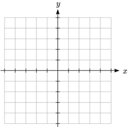
Figure1.1.15.The xy coordinate plane.
Example1.1.16.
Which of these graphs defines a function \(y=f(x)\text{?}\) Which of these graphs defines a one-to-one function?
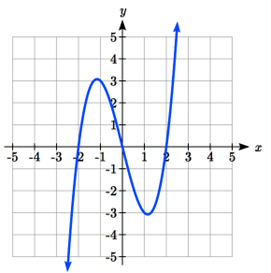
Figure1.1.17.Graph 1
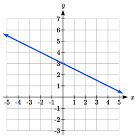
Figure1.1.18.Graph 2
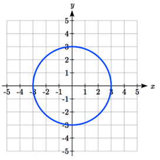
Figure1.1.19.Graph 3
Solution.
Looking at the three graphs above, the first two define a function \(y=f(x)\text{,}\) since for each input value along the horizontal axis there is exactly one output value corresponding, determined by the \(y\)-value of the graph. The 3rd graph does not define a function \(y=f(x)\) since some input values, such as \(x=2\text{,}\) correspond with more than one output value.
Graph 1 is not a one-to-one function. For example, the output value 3 has two corresponding input values, -1 and 2.3
Graph 2 is a one-to-one function; each input corresponds to exactly one output, and every output corresponds to exactly one input.
Graph 3 is not even a function so there is no reason to even check to see if it is a one-to-one function.
Definition1.1.20.Vertical line test.
The vertical line test is a handy way to think about whether a graph defines the vertical output as a function of the horizontal input. Imagine drawing vertical lines through the graph. If any vertical line would cross the graph more than once, then the graph does not define only one vertical output for each horizontal input.
Definition1.1.21.Horizontal Line Test.
Once you have determined that a graph defines a function, an easy way to determine if it is a one-to-one function is to use the horizontal line test. Draw horizontal lines through the graph. If any horizontal line crosses the graph more than once, then the graph does not define a one-to-one function.
Evaluating a function using a graph requires taking the given input and using the graph to look up the corresponding output. Solving a function equation using a graph requires taking the given output and looking on the graph to determine the corresponding input.
Example1.1.22.
Given the graph of f(x),
a) Evaluate \(f(2)\)
b) Solve \(f(x) = 4\)
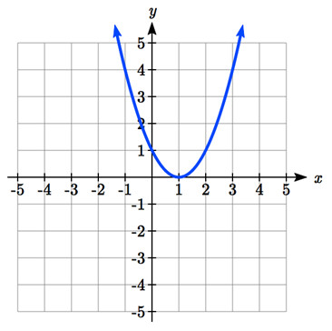
Figure1.1.23.Graph of \(f(x)\)
Solution.
a) To evaluate \(f(2)\text{,}\) we find the input of \(x=2\) on the horizontal axis. Moving up to the graph gives the point \((2, 1)\text{,}\) giving an output of \(y=1\text{.}\)\(f(2) = 1\text{.}\)
b) To solve \(f(x) = 4\text{,}\) we find the value 4 on the vertical axis because if \(f(x) = 4\) then 4 is the output. Moving horizontally across the graph gives two points with the output of 4: \((-1,4)\) and \((3,4)\text{.}\) These give the two solutions to \(f(x) = 4\text{:}\)\(x = -1\) or \(x = 3\text{.}\)
This means \(f(-1)=4\) and \(f(3)=4\text{,}\) or when the input is -1 or 3, the output is 4.
Notice that while the graph in the previous example is a function, getting two input values for the output value of 4 shows us that this function is not one-to-one.
Checkpoint1.1.24.
Using the graph from example 9, solve \(f(x)=1\text{.}\)
Subsection1.1.6Formulas as Functions
When possible, it is very convenient to define relationships using formulas. If it is possible to express the output as a formula involving the input quantity, then we can define a function.
Example1.1.25.
Express the relationship \(2n + 6p = 12\) as a function \(p = f(n)\) if possible.
Solution.
To express the relationship in this form, we need to be able to write the relationship where \(p\) is a function of \(n\text{,}\) which means writing it as \(p\) = [something involving \(n\)].
Starting with the given equation,
\begin{equation*}
2n + 6p = 12,
\end{equation*}
we can then subtract \(2n\) from both sides to get
\begin{equation*}
6p = 12 - 2n,
\end{equation*}
and then we can divide both sides by 6 and simplify to find
Having rewritten the formula as \(p\)=, we can now express p as a function: \(p=f(n)=2-\dfrac{1}{3}n\text{.}\)
It is important to note that not every relationship can be expressed as a function with a formula.
Note the important feature of an equation written as a function is that the output value can be determined directly from the input by doing evaluations - no further solving is required. This allows the relationship to act as a machine that takes an input, processes it, and returns an output. Modern technology and computers rely on these functional relationships, since the evaluation of the function can be programmed into machines, whereas solving things is much more challenging.
Example1.1.26.
Express the relationship \(x^{2}+y^{2}=1\) as a function \(y = f(x)\) if possible.
Solution.
If we try to solve for \(y\) in this equation, we get
\(y^{2}=1-x^{2}\)
\(y=\pm \sqrt{1-x^{2}}\)
We end up with two outputs corresponding to the same input, so this relationship cannot be represented as a single function \(y = f(x)\text{.}\)
As with tables and graphs, it is common to evaluate and solve functions involving formulas. Evaluating will require replacing the input variable in the formula with the value provided and calculating. Solving will require replacing the output variable in the formula with the value provided and solving for the input(s) that would produce that output.
Example1.1.27.
Given the function \(k(t)=t^{3}+2\text{,}\)
a) Evaluate \(k(2)\)
b) Solve \(k(t) = 1\)
Solution.
a) "Evaluate \(k(2)\)" means we want to find the output when the input is \(t = 2\text{.}\) We plug in the input value 2 into the formula wherever we see the input variable \(t\text{,}\) then simplify
\begin{equation*}
k(2)=2^{3}+2
\end{equation*}
\begin{equation*}
k(2)=8+2
\end{equation*}
\begin{equation*}
k(2) = 10
\end{equation*}
b) "Solve \(k(t) = 1\)" means we want to find the input \(t\) that will give us an output of 1. We set the formula for \(k(t)\) equal to 1, and solve for the input. Starting with the given information:
\begin{equation*}
k(t) = 1,
\end{equation*}
we can then substitute the original formula \(k(t)=t^{3}+2\) to get
\begin{equation*}
t^{3}+2=1.
\end{equation*}
Then subtract 2 from each side to get
\begin{equation*}
t^{3}=-1,
\end{equation*}
and finally take the cube root of each side to get the solution
\begin{equation*}
t=-1.
\end{equation*}
When solving an equation using formulas, you can check your answer by using your solution in the original equation to see if your calculated answer is correct.
We want to know if \(k(t)=1\) is true when \(t=-1\text{.}\)\(k(-1)=(-1)^{3}+2= -1+2= 1\text{,}\) which was the desired result.
Example1.1.28.
Given the function \(h(p)=p^{2}+2p\text{,}\)
a) Evaluate \(h(4)\)
b) Solve \(h(p) = 3\)
Solution.
To evaluate \(h(4)\) we substitute the value 4 for the input variable \(p\) in the given function. a) \(h(4)=(4)^{2}+2(4)= 16 + 8= 24\)
b) Starting with \(h(p) = 3\text{,}\) we substitute the original function \(h(p)=p^{2}+2p\) to get
\begin{equation*}
p^{2}+2p=3.
\end{equation*}
This is quadratic, so we can rearrange the equation to get something equal to 0 by subtracting 3 from each side. So,
\begin{equation*}
p^{2}+2p-3=0.
\end{equation*}
This is factor-able, so we factor it
\begin{equation*}
(p+3)(p-1)=0.
\end{equation*}
By the zero-factor theorem since \((p+3)(p-1)=0\text{,}\) either \((p+3)=0\) or \((p-1)=0\) (or both equal 0) and so we solve both equations for \(p\text{,}\) finding \(p = -3\) from the first equation and \(p = 1\) from the second equation.
This gives us the solution: \(h(p) = 3\) when \(p = 1\) or \(p = -3\text{.}\)
We found two solutions in this case, which tells us this function is not one-to-one.
Checkpoint1.1.29.
Given the function \(g(m)=\sqrt{m-4}\text{,}\) a. Evaluate \(g(5)\) b. Solve \(g(m) = 2\)
Subsection1.1.7Basic Toolkit Functions
In this text, we will be exploring functions - the shapes of their graphs, their unique features, their equations, and how to solve problems with them. When learning to read, we start with the alphabet. When learning to do arithmetic, we start with numbers. When working with functions, it is similarly helpful to have a base set of elements to build from. We call these our "toolkit of functions" - a set of basic named functions for which we know the graph, equation, and special features.
For these definitions we will use \(x\) as the input variable and \(f(x)\) as the function output.
Definition1.1.30.Toolkit Functions.
.
Linear
Constant: \(f(x)=c\text{,}\) where \(c\) is a constant number
Identity: \(f(x)=x\)
Power
Quadratic: \(f(x)=x^{2}\)
Cubic: \(f(x)=x^{3}\)
Reciprocal: \(f(x)=\dfrac{1}{x}\)
Reciprocal Squared: \(f(x)=\dfrac{1}{x^2}\)
Square Root: \(f(x)=\sqrt{x}=x^{\frac{1}{2}}\)
Cube Root: \(f(x)=\sqrt[3]{x}=x^{\frac{1}{3}}\)
You will see these toolkit functions, combinations of toolkit functions, their graphs and their transformations frequently throughout this book. In order to successfully follow along later in the book, it will be very helpful if you can recognize these toolkit functions and their features quickly by name, equation, graph and basic table values.
Not every important equation can be written as \(y = f(x)\text{.}\) An example of this is the equation of a circle. Recall the distance formula for the distance between two points:
A circle with radius \(r\) with center at \((h, k)\) can be described as all points \((x, y)\) a distance of \(r\) from the center, so using the distance formula, \(r=\sqrt{(x-h)^{2}+(y-k)^{2}}\text{,}\) giving:
Definition1.1.31.Equation of a circle.
A circle with radius r with center \((h, k)\) has equation \(r^{2}=(x-h)^{2}+(y-k)^{2}\text{.}\)
Subsection1.1.8Graphs of the Toolkit Functions
The following graphs are the graphs of the toolkit functions, followed by the function definition.
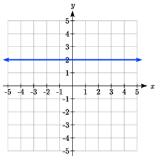
Figure1.1.32.Graph of the constant function \(f(x)=2\)
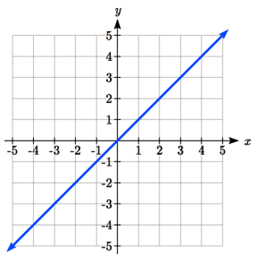
Figure1.1.33.Graph of \(f(x)=x\)
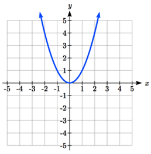
Figure1.1.34.Graph of \(f(x)=x^2\)
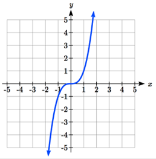
Figure1.1.35.Graph of \(f(x)=x^3\)
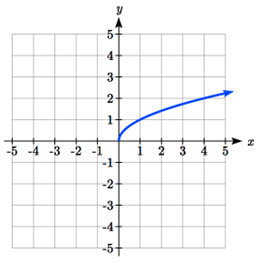
Figure1.1.36.Graph of \(f(x)=\sqrt{x}\)
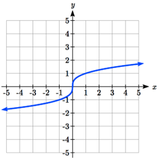
Figure1.1.37.Graph of \(f(x)=\sqrt[3]{x}\)
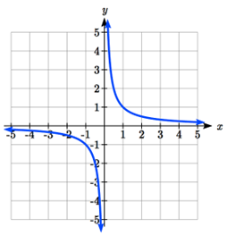
Figure1.1.38.Graph of \(f(x)=\dfrac{1}{x}\)
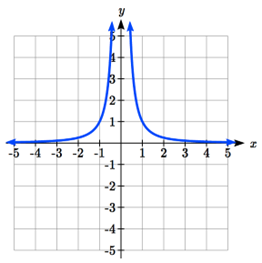
Figure1.1.39.Graph of \(f(x)=\dfrac{1}{x^2}\)
Subsection1.1.9Answers
Checkpoint1.1.40.
Answers to checkpoint exercises.
Answer.
Yes: for each bank account, there would be one balance associated
No: there could be several bank accounts with the same balance
Yes it’s a function; No, it’s not one-to-one (several percents give the same letter grade)
When \(n=4\text{,}\)\(Q=g(4)=6\)
There are two points where the output is 1: \(x = 0\) or \(x = 2\)
a. \(g(5)=\sqrt{5-4}=1\text{,}\) b. \(\sqrt{m-4}=2\text{.}\) Square both sides to get \(m-4=4\text{,}\) so \(m = 8\)